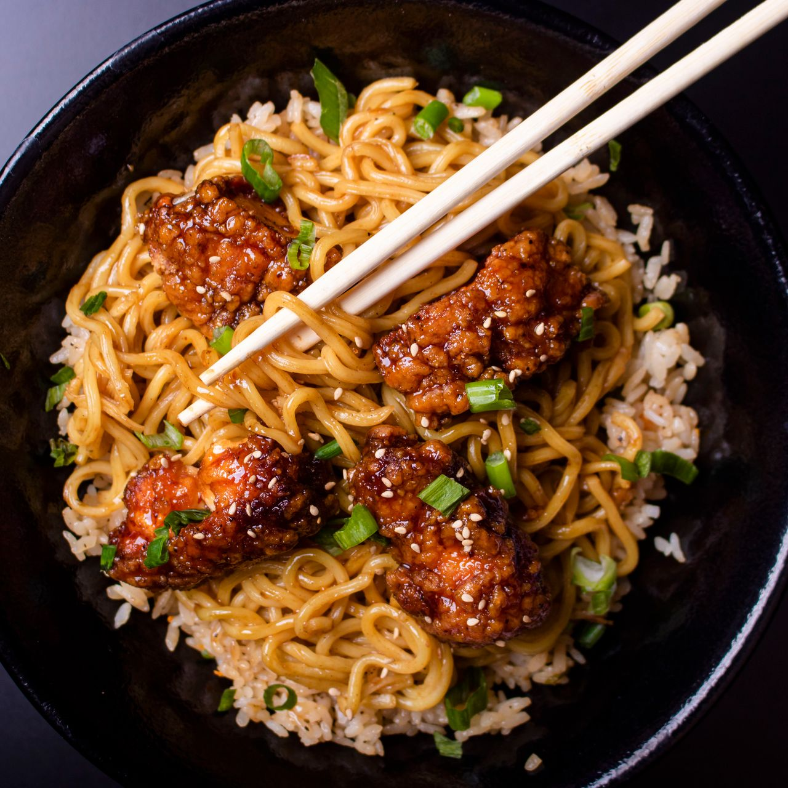
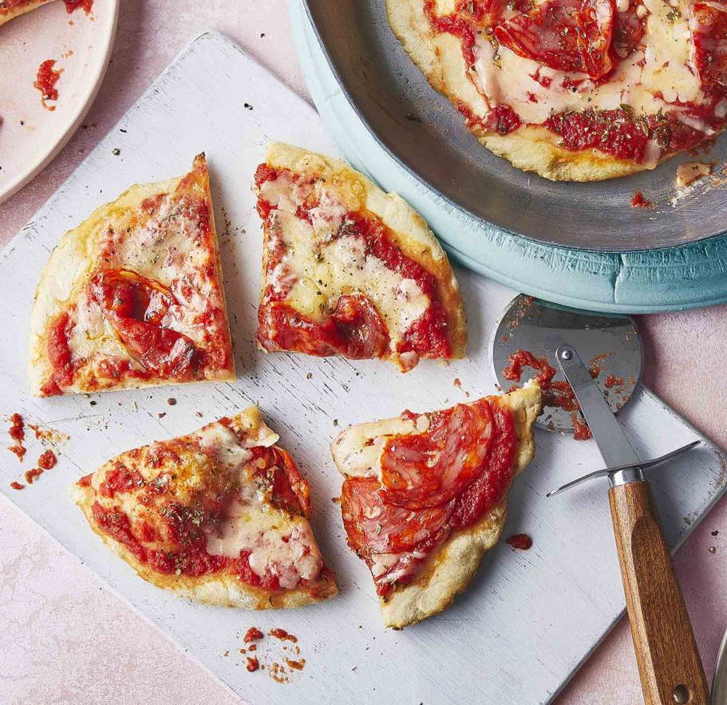

2. Sega omavahel muna, jahu, tärklis, sool ja pipar.
3. Lisa kana ning sega korralikult läbi.
4. Prae kana kuumal pannil kuldpruuniks (umbes 5-7 minutit). Tõsta kõrvale.
5. Sega külmal pannil kokku õli, ketšup, sojakaste, suhkur, äädikas ja vesi.
6. Pane keskminst tuld ja segudes kastet oota kuni see hakkab keema.
7. Lisa kana hauta veel 2-3 minutit, kuni kana on kastmega ühtlaselt kaetud.
8. Serveeri koos riisiga/nuudlitega.">


2. Lisa sool, soe vesi ja 2 supilusikatäit õli ning sega kokku, kuni tekib pehme tainas.
3. Sõtku lühidalt läbi, seejärel jaga tainas neljaks võrdseks palliks.
4. Puista puhtale tööpinnale veidi jahu ja rullige üks pall rulliga umbes 20 cm läbimõõduga ringiks.
5. Määri tainast mõlemalt poolt kergelt ülejäänud õliga.
6.
Aseta suur teflonpann kuumakindla käepidemega keskmisele-kõrgele kuumusele.
7. Aseta tainas ettevaatlikult pannile ja küpseta 5 minutit, kuni see on kuldpruun.
8. Pööra ümber ja küpseta veel 3 minutit, kuni tainas on läbi küpsenud.
9. Eelkuumuta grill keskmisele kuumusele.
10. Laota tomatid lusikaga tainale, jättes serva ümber vaba ääre, ning puista peale maitsetaimed.
11. Puista peale juust, rebi kolm chorizo viilu pooleks ja paiguta need peale. Lõpeta rohkelt musta pipraga.
12. Grilli 3-4 minutit, kuni juust on sulanud. Korda sama, et valmistada ülejäänud pitsad. ">